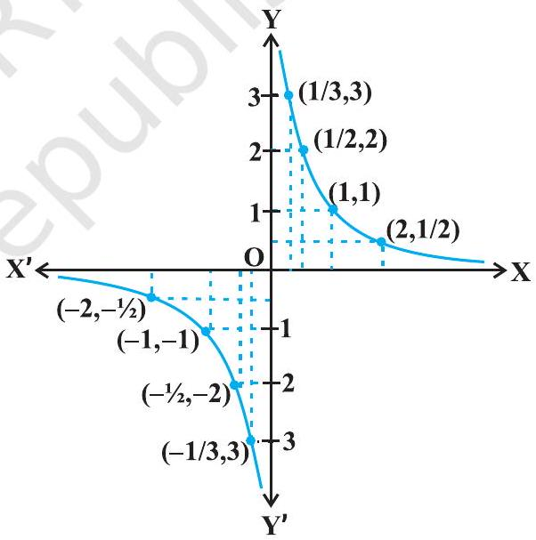
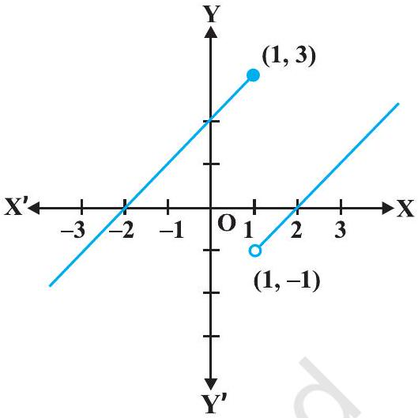
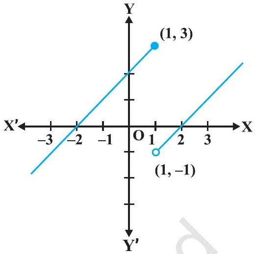
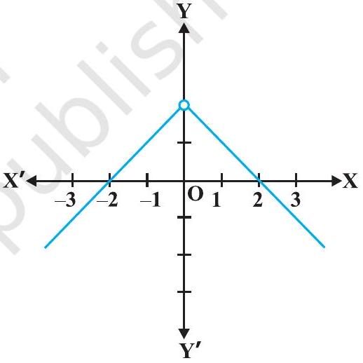
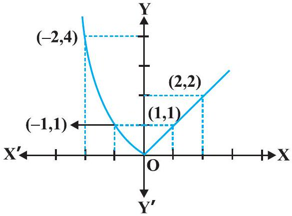
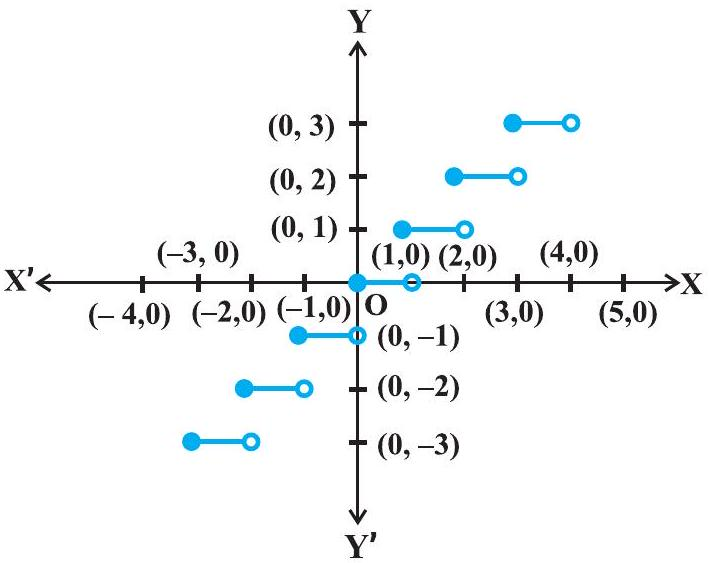

x = 1 पर फलन f(x) = 2 x+3 के सांतत्य की जाँच कीजिए।
जाँचिए कि क्या फलन f(x) = x2, x = 0 पर संतत है?
x = 0 पर फलन f(x) = |x| के सांतत्य पर विचार कीजिए।
दर्शाइए कि फलन
उन बिंदुओं की जाँच कीजिए जिन पर अचर फलन (Constant function) f(x) = k संतत है।
सिद्ध कीजिए कि वास्तविक संख्याओं के लिए तत्समक फलन (Identity function) f(x) = x, प्रत्येक वास्तविक संख्या के लिए संतत है।
क्या f(x) = |x| द्वारा परिभाषित फलन एक संतत फलन है?
फलन f(x) = x3+x2-1 के सांतत्य पर विचार कीजिए।
f(x)=1x, x ≠ 0 द्वारा परिभाषित फलन f के सांतत्य पर विचार कीजिए।
| x | 1 | 0.3 | 0.2 | 0.1 = 10-1 | 0.01 = 10-2 | 0.001 = 10-3 | 10-n |
| f(x) | 1 | 3.333... | 5 | 10 | 100 = 102 | 1000 = 103 | 10n |
| x | - 1 | -0.3 | -0.2 | -10-1 | -10-2 | -10-3 | -10-n |
| f(x) | -1 | - 3.333... | -5 | - 10 | -102 | -103 | -10n |

निम्नलिखित फलन के सांतत्य पर विचार कीजिए:

निम्नलिखित प्रकार से परिभाषित फलन f के समस्त (सभी) असांतत्य बिंदुओं को ज्ञात कीजिए

निम्नलिखित फलन के सांतत्य पर विचार कीजिए:

निम्नलिखित फलन के सांतत्य पर विचार कीजिए:

दर्शाइए कि प्रत्येक बहुपद फलन संतत होता है।
f(x) = [x] द्वारा परिभाषित महत्तम पूर्णांक फलन के असांतत्य के समस्त बिंदुओं को ज्ञात कीजिए, जहाँ [x] उस महत्तम पूर्णांक को प्रकट करता है, जो x से कम या उसके बराबर है।

सिद्ध कीजिए कि प्रत्येक परिमेय फलन संतत होता है।
sine फलन के सांतत्य पर विचार कीजिए।
सिद्ध कीजिए कि f(x) = tan x एक संतत फलन है।
दर्शाइए कि f(x) = sin (x2) द्वारा परिभाषित फलन, एक संतत फलन है।
दर्शाइए कि f(x) = |1-x+|x|| द्वारा परिभाषित फलन f, जहाँ x एक वास्तविक संख्या है, एक संतत फलन है।
f(x) = sin (x2) का अवकलज ज्ञात कीजिए।
यदि x-y = π तो d yd x ज्ञात कीजिए।
यदि y+sin y = cos x तो d yd x ज्ञात कीजिए।
क्या यह सत्य है कि x के सभी वास्तविक मानों के लिए x = elog x है?
x के सापेक्ष निम्नलिखित का अवकलन कीजिए:
भाग (i)
e-x
भाग (ii)
sin (log x), x>0
भाग (iii)
cos-1(ex)
भाग (iv)
ecos x
x के सापेक्ष √((x-3)(x2+4)3 x2+4 x+5) का अवकलन कीजिए।
x के सापेक्ष ax का अवकलन कीजिए, जहाँ a एक धन अचर है।
x के सापेक्ष xsin x, का अवकलन कीजिए, जब कि x>0 है।
यदि yx+xy+xx = ab है। तो d yd x ज्ञात कीजिए।
यदि x = a cos θ, y = a sin θ, तो d yd x ज्ञात कीजिए।
यदि x = a t2, y = 2 a t है तो d yd x ज्ञात कीजिए।
यदि x = a(θ+sin θ), y = a(1-cos θ) है तो d yd x ज्ञात कीजिए ।
यदि x23+y23 = a23 है तो d yd x ज्ञात कीजिए।
यदि y = x3+tan x है तो d2 yd x2 ज्ञात कीजिए।
यदि y = A sin x+B cos x है तो सिद्ध कीजिए कि d2 yd x2+y = 0 है।
यदि y = 3 e2 x+2 e3 x है तो सिद्ध कीजिए कि d2 yd x2-5 d yd x+6 y = 0
यदि y = sin-1 x है तो दर्शाइए कि (1-x2) d2 yd x2-x d yd x = 0 है।
x के सापेक्ष निम्नलिखित का अवकलन कीजिए:
भाग (i)
√(3 x+2)+1√(2 x2+4)
भाग (ii)
log 7(log x)
x के सापेक्ष निम्नलिखित का अवकलन कीजिए:
भाग (i)
cos-1(sin x)
भाग (ii)
tan-1(sin x1+cos x)
भाग (iii)
sin-1(2x+11+4x)
यदि सभी 0<x<π के लिए f(x) = (sin x)sin x है तो f′(x) ज्ञात कीजिए।
धनात्मक अचर a के लिए d yd x, ज्ञात कीजिए, जहाँ
ecos x के सापेक्ष sin2 x का अवकलन कीजिए।
सिद्ध कीजिए कि फलन f(x) = 5 x-3, x = 0, x = -3 तथा x = 5 पर संतत है।
x = 3 पर फलन f(x) = 2 x2-1 के सांतत्य की जाँच कीजिए।
निम्नलिखित फलनों के सांतत्य की जाँच कीजिए:
भाग (a)
f(x) = x-5
भाग (b)
f(x)=1x-5, x ≠ 5
भाग (c)
f(x)=x2-25x+5, x ≠ -5
भाग (d)
f(x) = |x-5|
सिद्ध कीजिए कि फलन f(x) = xn, x = n, पर संतत है, जहाँ n एक धन पूर्णांक है।
क्या f(x) = {x, यदि x ≤ 15, यदि x>1 द्वारा परिभाषित फलन f x = 0, x = 1, तथा x = 2 पर संतत है?
f के सभी असांतत्य के बिंदुओं को ज्ञात कीजिए, जब कि f निम्नलिखित प्रकार से परिभाषित है: f(x) = {2 x+3, यदि x ≤ 22 x-3, यदि x>2
f के सभी असांतत्य के बिंदुओं को ज्ञात कीजिए, जब कि f निम्नलिखित प्रकार से परिभाषित है: f(x) = {|x|+3, यदि x ≤ -3-2 x, यदि -3<x<36 x+2, यदि x ≥ 3
f के सभी असांतत्य के बिंदुओं को ज्ञात कीजिए, जब कि f निम्नलिखित प्रकार से परिभाषित है: f(x) = {|x|x, यदि x ≠ 00, यदि x = 0
f के सभी असांतत्य के बिंदुओं को ज्ञात कीजिए, जब कि f निम्नलिखित प्रकार से परिभाषित है: f(x) = x|x|, यदि x<0-1, यदि x ≥ 0
f के सभी असांतत्य के बिंदुओं को ज्ञात कीजिए, जब कि f निम्नलिखित प्रकार से परिभाषित है: f(x) = {x+1, यदि x ≥ 1x2+1, यदि x<1
f के सभी असांतत्य के बिंदुओं को ज्ञात कीजिए, जब कि f निम्नलिखित प्रकार से परिभाषित है: f(x) = x3-3, यदि x ≤ 2x2+1, यदि x>2
f के सभी असांतत्य के बिंदुओं को ज्ञात कीजिए, जब कि f निम्नलिखित प्रकार से परिभाषित है: f(x) = x10-1, यदि x ≤ 1x2, यदि x>1
क्या f(x) = {x+5, यदि x ≤ 1x-5, यदि x>1 द्वारा परिभाषित फलन, एक संतत फलन है?
फलन f, के सांतत्य पर विचार कीजिए, जहाँ f निम्नलिखित द्वारा परिभाषित है: f(x) = {3, यदि 0 ≤ x ≤ 14, यदि 1<x<35, यदि 3 ≤ x ≤ 10
फलन f, के सांतत्य पर विचार कीजिए, जहाँ f निम्नलिखित द्वारा परिभाषित है: f(x) = 2 x, यदि x<00, यदि 0 ≤ x ≤ 14 x, यदि x>1
फलन f, के सांतत्य पर विचार कीजिए, जहाँ f निम्नलिखित द्वारा परिभाषित है: f(x) = -2, यदि x ≤ -12 x, यदि -1<x ≤ 12, यदि x>1
a और b के उन मानों को ज्ञात कीजिए जिनके लिए
λ के किस मान के लिए
दर्शाइए कि g(x) = x-[x] द्वारा परिभाषित फलन समस्त पूर्णांक बिंदुओं पर असंतत है। यहाँ [x] उस महत्तम पूर्णांक निरूपित करता है, जो x के बराबर या x से कम है।
क्या f(x) = x2-sin x+5 द्वारा परिभाषित फलन x = π पर संतत है?
निम्नलिखित फलनों के सांतत्य पर विचार कीजिए:
भाग (a)
f(x) = sin x+cos x
भाग (b)
f(x) = sin x-cos x
भाग (c)
f(x) = sin x · cos x
cosine, cosecant, secant और cotangent फलनों के सांतत्य पर विचार कीजिए।
f के सभी असांत्यता के बिंदुओं को ज्ञात कीजिए, जहाँ
निर्धारित कीजिए कि फलन f
f के सांतत्य की जाँच कीजिए, जहाँ f निम्नलिखित प्रकार से परिभाषित है
प्रश्न 26 से 29 में k के मानों को ज्ञात कीजिए ताकि प्रदत्त फलन निर्दिष्ट बिंदु पर संतत हो: f(x) = {k cos xπ-2 x, यदि x ≠ π23, यदि x=π2 द्वारा परिभाषित फलन x=π2 पर
प्रश्न 26 से 29 में k के मानों को ज्ञात कीजिए ताकि प्रदत्त फलन निर्दिष्ट बिंदु पर संतत हो: f(x) = {k x2, यदि x ≤ 23, यदि x>2 द्वारा परिभाषित फलन x = 2 पर
प्रश्न 26 से 29 में k के मानों को ज्ञात कीजिए ताकि प्रदत्त फलन निर्दिष्ट बिंदु पर संतत हो: f(x) = {k x+1, यदि x ≤ πcos x, यदि x>π द्वारा परिभाषित फलन x = π पर
प्रश्न 26 से 29 में k के मानों को ज्ञात कीजिए ताकि प्रदत्त फलन निर्दिष्ट बिंदु पर संतत हो: f(x) = {k x+1, यदि x ≤ 53 x-5, यदि x>5 द्वारा परिभाषित फलन x = 5 पर
a तथा b के मानों को ज्ञात कीजिए ताकि
दर्शाइए कि f(x) = cos (x2) द्वारा परिभाषित फलन एक संतत फलन है।
दर्शाइए कि f(x) = |cos x| द्वारा परिभाषित फलन एक संतत फलन है।
जाँचिए कि क्या sin |x| एक संतत फलन है।
f(x) = |x|-|x+1| द्वारा परिभाषित फलन f के सभी असांत्यता के बिंदुओं को ज्ञात कीजिए।
x के सापेक्ष निम्नलिखित फलन का अवकलन कीजिए: sin (x2+5)
x के सापेक्ष निम्नलिखित फलन का अवकलन कीजिए: cos (sin x)
x के सापेक्ष निम्नलिखित फलन का अवकलन कीजिए: sin (a x+b)
x के सापेक्ष निम्नलिखित फलन का अवकलन कीजिए: sec (tan (√(x)))
x के सापेक्ष निम्नलिखित फलन का अवकलन कीजिए: sin (a x+b)cos (c x+d)
x के सापेक्ष निम्नलिखित फलन का अवकलन कीजिए: cos x3 · sin2(x5)
x के सापेक्ष निम्नलिखित फलन का अवकलन कीजिए: 2 √(cot (x2))
x के सापेक्ष निम्नलिखित फलन का अवकलन कीजिए: cos (√(x))
सिद्ध कीजिए कि फलन f(x) = |x-1|, x ∈ R, x = 1 पर अवकलित नहीं है।
सिद्ध कीजिए कि महत्तम पूर्णांक फलन f(x) = [x], 0<x<3, x = 1 तथा x = 2 पर अवकलित नहीं है।
निम्नलिखित प्रश्न में d yd x ज्ञात कीजिए: 2 x+3 y = sin x
निम्नलिखित प्रश्न में d yd x ज्ञात कीजिए: 2 x+3 y = sin y
निम्नलिखित प्रश्न में d yd x ज्ञात कीजिए: a x+b y2 = cos y
निम्नलिखित प्रश्न में d yd x ज्ञात कीजिए: x y+y2 = tan x+y
निम्नलिखित प्रश्न में d yd x ज्ञात कीजिए: x2+x y+y2 = 100
निम्नलिखित प्रश्न में d yd x ज्ञात कीजिए: x3+x2 y+x y2+y3 = 81
निम्नलिखित प्रश्न में d yd x ज्ञात कीजिए: sin2 y+cos x y = k
निम्नलिखित प्रश्न में d yd x ज्ञात कीजिए: sin2 x+cos2 y = 1
निम्नलिखित प्रश्न में d yd x ज्ञात कीजिए: y = sin-1(2 x1+x2)
निम्नलिखित प्रश्न में d yd x ज्ञात कीजिए: y = tan-1(3 x-x31-3 x2),-1√(3)<x<1√(3)
निम्नलिखित प्रश्न में d yd x ज्ञात कीजिए: y = cos-1(1-x21+x2), 0<x<1
निम्नलिखित प्रश्न में d yd x ज्ञात कीजिए: y = sin-1(1-x21+x2), 0<x<1
निम्नलिखित प्रश्न में d yd x ज्ञात कीजिए: y = cos-1(2 x1+x2),-1<x<1
निम्नलिखित प्रश्न में d yd x ज्ञात कीजिए: y = sin-1(2 x √(1-x2)),-1√(2)<x<1√(2)
निम्नलिखित प्रश्न में d yd x ज्ञात कीजिए: y = sec-1(12 x2-1), 0<x<1√(2)
x के सापेक्ष निम्नलिखित का अवकलन कीजिए: exsin x
x के सापेक्ष निम्नलिखित का अवकलन कीजिए: esin-1 x
x के सापेक्ष निम्नलिखित का अवकलन कीजिए: ex3
x के सापेक्ष निम्नलिखित का अवकलन कीजिए: sin (tan-1 e-x)
x के सापेक्ष निम्नलिखित का अवकलन कीजिए: log (cos ex)
x के सापेक्ष निम्नलिखित का अवकलन कीजिए: ex+ex2+…+ex5
x के सापेक्ष निम्नलिखित का अवकलन कीजिए: √(e√(x)), x>0
x के सापेक्ष निम्नलिखित का अवकलन कीजिए: log (log x), x>1
x के सापेक्ष निम्नलिखित का अवकलन कीजिए: cos xlog x, x>0
x के सापेक्ष निम्नलिखित का अवकलन कीजिए: cos (log x+ex)
1 से 11 तक के प्रश्नों में प्रदत्त फलनों का x के सापेक्ष अवकलन कीजिए: cos x . cos 2 x . cos 3 x
1 से 11 तक के प्रश्नों में प्रदत्त फलनों का x के सापेक्ष अवकलन कीजिए: √((x-1)(x-2)(x-3)(x-4)(x-5))
1 से 11 तक के प्रश्नों में प्रदत्त फलनों का x के सापेक्ष अवकलन कीजिए: (log x)cos x
1 से 11 तक के प्रश्नों में प्रदत्त फलनों का x के सापेक्ष अवकलन कीजिए: xx-2sin x
1 से 11 तक के प्रश्नों में प्रदत्त फलनों का x के सापेक्ष अवकलन कीजिए: (x+3)2 · (x+4)3 · (x+5)4
1 से 11 तक के प्रश्नों में प्रदत्त फलनों का x के सापेक्ष अवकलन कीजिए: (x+1x)x+x(1+1x)
1 से 11 तक के प्रश्नों में प्रदत्त फलनों का x के सापेक्ष अवकलन कीजिए: (log x)x+xlog x
1 से 11 तक के प्रश्नों में प्रदत्त फलनों का x के सापेक्ष अवकलन कीजिए: (sin x)x+sin-1 √(x)
1 से 11 तक के प्रश्नों में प्रदत्त फलनों का x के सापेक्ष अवकलन कीजिए: xsin x+(sin x)cos x
1 से 11 तक के प्रश्नों में प्रदत्त फलनों का x के सापेक्ष अवकलन कीजिए: xx cos x+x2+1x2-1
1 से 11 तक के प्रश्नों में प्रदत्त फलनों का x के सापेक्ष अवकलन कीजिए: (x cos x)x+(x sin x)1x
12 से 15 तक के प्रश्नों में प्रदत्त फलनों के लिए d yd x ज्ञात कीजिए: xy+yx = 1
12 से 15 तक के प्रश्नों में प्रदत्त फलनों के लिए d yd x ज्ञात कीजिए: yx = xy
12 से 15 तक के प्रश्नों में प्रदत्त फलनों के लिए d yd x ज्ञात कीजिए: (cos x)y = (cos y)x
12 से 15 तक के प्रश्नों में प्रदत्त फलनों के लिए d yd x ज्ञात कीजिए: x y = e(x-y)
f(x) = (1+x)(1+x2)(1+x4)(1+x8) द्वारा प्रदत्त फलन का अवकलज ज्ञात कीजिए और इस प्रकार f′(1) ज्ञात कीजिए।
(x2-5 x+8)(x3+7 x+9) का अवकलन निम्नलिखित तीन प्रकार से कीजिए: (i) गुणनफल नियम का प्रयोग करके (ii) गुणनफल के विस्तारण द्वारा एक एकल बहुपद प्राप्त करके (iii) लघुगणकीय अवकलन द्वारा यह भी सत्यापित कीजिए कि इस प्रकार प्राप्त तीनों उत्तर समान हैं।
भाग (i)
गुणनफल नियम का प्रयोग करके
भाग (ii)
गुणनफल के विस्तारण द्वारा एक एकल बहुपद प्राप्त करके
भाग (iii)
लघुगणकीय अवकलन द्वारा यह भी सत्यापित कीजिए कि इस प्रकार प्राप्त तीनों उत्तर समान हैं।
यदि u, v तथा w, x के फलन हैं, तो दो विधियों अर्थात् प्रथम-गुणनफल नियम की पुनरावृत्ति द्वारा, द्वितीय - लघुगणकीय अवकलन द्वारा दर्शाइए कि
यदि प्रश्न संख्या 1 से 10 तक में x तथा y दिए समीकरणों द्वारा, एक दूसरे से प्राचलिक रूप में संबंधित हों, तो प्राचलों का विलोपन किए बिना, d yd x ज्ञात कीजिए: x = 2 a t2, y = a t4
यदि प्रश्न संख्या 1 से 10 तक में x तथा y दिए समीकरणों द्वारा, एक दूसरे से प्राचलिक रूप में संबंधित हों, तो प्राचलों का विलोपन किए बिना, d yd x ज्ञात कीजिए: x = a cos θ, y = b cos θ
यदि प्रश्न संख्या 1 से 10 तक में x तथा y दिए समीकरणों द्वारा, एक दूसरे से प्राचलिक रूप में संबंधित हों, तो प्राचलों का विलोपन किए बिना, d yd x ज्ञात कीजिए: x = sin t, y = cos 2 t
यदि प्रश्न संख्या 1 से 10 तक में x तथा y दिए समीकरणों द्वारा, एक दूसरे से प्राचलिक रूप में संबंधित हों, तो प्राचलों का विलोपन किए बिना, d yd x ज्ञात कीजिए: x = 4 t, y=4t
यदि प्रश्न संख्या 1 से 10 तक में x तथा y दिए समीकरणों द्वारा, एक दूसरे से प्राचलिक रूप में संबंधित हों, तो प्राचलों का विलोपन किए बिना, d yd x ज्ञात कीजिए: x = cos θ-cos 2 θ, y = sin θ-sin 2 θ
यदि प्रश्न संख्या 1 से 10 तक में x तथा y दिए समीकरणों द्वारा, एक दूसरे से प्राचलिक रूप में संबंधित हों, तो प्राचलों का विलोपन किए बिना, d yd x ज्ञात कीजिए: x = a(θ-sin θ), y = a(1+cos θ)
यदि प्रश्न संख्या 1 से 10 तक में x तथा y दिए समीकरणों द्वारा, एक दूसरे से प्राचलिक रूप में संबंधित हों, तो प्राचलों का विलोपन किए बिना, d yd x ज्ञात कीजिए: x=sin3 t√(cos 2 t), y=cos3 t√(cos 2 t)
यदि प्रश्न संख्या 1 से 10 तक में x तथा y दिए समीकरणों द्वारा, एक दूसरे से प्राचलिक रूप में संबंधित हों, तो प्राचलों का विलोपन किए बिना, d yd x ज्ञात कीजिए: x = a(cos t+log tan t2) y = a sin t
यदि प्रश्न संख्या 1 से 10 तक में x तथा y दिए समीकरणों द्वारा, एक दूसरे से प्राचलिक रूप में संबंधित हों, तो प्राचलों का विलोपन किए बिना, d yd x ज्ञात कीजिए: x = a sec θ, y = b tan θ
यदि प्रश्न संख्या 1 से 10 तक में x तथा y दिए समीकरणों द्वारा, एक दूसरे से प्राचलिक रूप में संबंधित हों, तो प्राचलों का विलोपन किए बिना, d yd x ज्ञात कीजिए: x = a(cos θ+θ sin θ), y = a(sin θ-θ cos θ)
यदि x=√(asin-1 t), y=√(acos-1 t), तो दर्शाइए कि d yd x = -yx
प्रश्न संख्या 1 से 10 तक में दिए फलनों के द्वितीय कोटि के अवकलज ज्ञात कीजिए: x2+3 x+2
प्रश्न संख्या 1 से 10 तक में दिए फलनों के द्वितीय कोटि के अवकलज ज्ञात कीजिए: x20
प्रश्न संख्या 1 से 10 तक में दिए फलनों के द्वितीय कोटि के अवकलज ज्ञात कीजिए: x · cos x
प्रश्न संख्या 1 से 10 तक में दिए फलनों के द्वितीय कोटि के अवकलज ज्ञात कीजिए: log x
प्रश्न संख्या 1 से 10 तक में दिए फलनों के द्वितीय कोटि के अवकलज ज्ञात कीजिए: x3 log x
प्रश्न संख्या 1 से 10 तक में दिए फलनों के द्वितीय कोटि के अवकलज ज्ञात कीजिए: ex sin 5 x
प्रश्न संख्या 1 से 10 तक में दिए फलनों के द्वितीय कोटि के अवकलज ज्ञात कीजिए: e6 x cos 3 x
प्रश्न संख्या 1 से 10 तक में दिए फलनों के द्वितीय कोटि के अवकलज ज्ञात कीजिए: tan-1 x
प्रश्न संख्या 1 से 10 तक में दिए फलनों के द्वितीय कोटि के अवकलज ज्ञात कीजिए: log (log x)
प्रश्न संख्या 1 से 10 तक में दिए फलनों के द्वितीय कोटि के अवकलज ज्ञात कीजिए: sin (log x)
यदि y = 5 cos x-3 sin x है तो सिद्ध कीजिए कि d2 yd x2+y = 0
यदि y = cos-1 x है तो d2 yd x2 को केवल y के पदों में ज्ञात कीजिए।
यदि y = 3 cos (log x)+4 sin (log x) है तो दर्शाइए कि x2 y2+x y1+y = 0
यदि y = A em x+B en x है तो दर्शाइए कि d2 yd x2-(m+n) d yd x+m n y = 0
यदि y = 500 e7 x+600 e-7 x है तो दर्शाइए कि d2 yd x2 = 49 y है।
यदि ey(x+1) = 1 है तो दर्शाइए कि d2 yd x2 = (d yd x)2 है।
यदि y = (tan-1 x)2 है तो दर्शाइए कि (x2+1)2 y2+2 x(x2+1) y1 = 2 है।
प्रश्न संख्या 1 से 11 तक प्रदत्त फलनों का, x के सापेक्ष अवकलन कीजिए: (3 x2-9 x+5)9
प्रश्न संख्या 1 से 11 तक प्रदत्त फलनों का, x के सापेक्ष अवकलन कीजिए: sin3 x+cos6 x
प्रश्न संख्या 1 से 11 तक प्रदत्त फलनों का, x के सापेक्ष अवकलन कीजिए: (5 x)3 cos x 2 x
प्रश्न संख्या 1 से 11 तक प्रदत्त फलनों का, x के सापेक्ष अवकलन कीजिए: sin-1(x √(x)), 0 ≤ x ≤ 1.
प्रश्न संख्या 1 से 11 तक प्रदत्त फलनों का, x के सापेक्ष अवकलन कीजिए: cos-1 x2√(2 x+7),-2<x<2.
प्रश्न संख्या 1 से 11 तक प्रदत्त फलनों का, x के सापेक्ष अवकलन कीजिए: cot-1[√(1+sin x)+√(1-sin x)√(1+sin x)-√(1-sin x)], 0<x<π2
प्रश्न संख्या 1 से 11 तक प्रदत्त फलनों का, x के सापेक्ष अवकलन कीजिए: (log x)log x, x>1
प्रश्न संख्या 1 से 11 तक प्रदत्त फलनों का, x के सापेक्ष अवकलन कीजिए: cos (a cos x+b sin x), किन्हीं अचर a तथा b के लिए
प्रश्न संख्या 1 से 11 तक प्रदत्त फलनों का, x के सापेक्ष अवकलन कीजिए: (sin x-cos x)(sin x-cos x), π4<x<3 π4
प्रश्न संख्या 1 से 11 तक प्रदत्त फलनों का, x के सापेक्ष अवकलन कीजिए: xx+xa+ax+aa, किसी नियत a>0 तथा x>0 के लिए
प्रश्न संख्या 1 से 11 तक प्रदत्त फलनों का, x के सापेक्ष अवकलन कीजिए: xx2-3+(x-3)x2, x>3 के लिए
यदि y = 12(1-cos t), x = 10(t-sin t),-π2<t<π2 तो d yd x ज्ञात कीजिए।
यदि y = sin-1 x+sin-1 √(1-x2), 0<x<1 है तो d yd x ज्ञात कीजिए।
यदि -1<x<1 के लिए x √(1+y)+y √(1+x) = 0 है तो सिद्ध कीजिए कि
यदि किसी c>0 के लिए (x-a)2+(y-b)2 = c2 है तो सिद्ध कीजिए कि
यदि cos y = x cos (a+y), तथा cos a ≠ ± 1, तो सिद्ध कीजिए कि d yd x=cos2(a+y)sin a
यदि x = a(cos t+t sin t) और y = a(sin t-t cos t), तो d2 yd x2 ज्ञात कीजिए।
यदि f(x) = |x|3, तो प्रमाणित कीजिए कि f′ ′(x) का अस्तित्व है और इसे ज्ञात भी कीजिए।
sin (A+B) = sin A cos B+cos A sin B का प्रयोग करते हुए अवकलन द्वारा cosines के लिए योग सूत्र ज्ञात कीजिए।
क्या एक ऐसे फलन का अस्तित्व है, जो प्रत्येक बिंदु पर संतत हो किंतु केवल दो बिंदुओं पर अवकलनीय न हो? अपने उत्तर का औचित्य भी बतलाइए।
यदि y = f(x)g(x)h(x)lmnabc है तो सिद्ध कीजिए कि d yd x = f′(x)g′(x)h′(x)lmnabc
यदि y = ea cos-1 x,-1 ≤ x ≤ 1, तो दर्शाइए कि